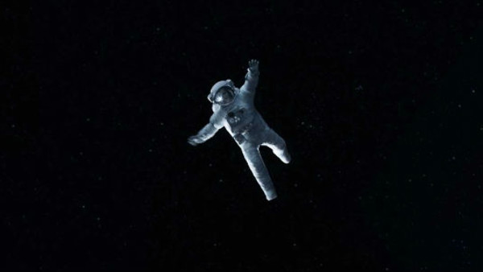
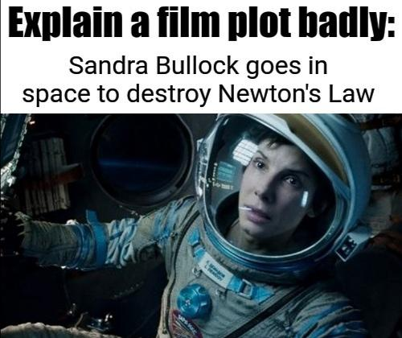

Analyzing orbital mechanics, space debris, and zero-gravity physics.
Our charming astronaut Matt Kowalski, decides to heroically unhook himself and float off into the void like some space cowboy martyr."People will love this" ahh move. they’re both literally tethered together, they’ve already come to a stop relative to each other, and there is no force pulling him away. This is space. There’s no gravity yanking him into a black hole. He could’ve tugged on the rope, done a lazy backstroke, and floated back like it was Sunday in the pool. But no. Drama must ensue. So instead, he looks into her eyes, says something poetic, and then just... lets go. And she just watches! Like, "Oh no, Matt, don’t! 😢" instead of "DUDE, PULL YOURSELF BACK!" Do u get deja vu? Titanic~Jack and Rose But hey, it made people cry, and apparently that’s worth it(ig)
It was certainly visually impressive, no one can really argue with that. The setting for the movie was a treat, and the CGI was fantastically done.BUT. The movie sucked big time from the start. "don't have oxygen? OK let's keep talking about random bullshit". She is dying of CO2 poisoning and Clooney asks her to wait so he can talk about his blue eyes, and she does?HEIN???Is anyone serious? ok forget abt their script it was too bad, but no space stations are parked that close okay? they just cant be , theyre in complete different orbits-but fine it was for movie simplification purpose.
While Gravity convincingly depicts astronauts floating in space, some details—such as movement physics—are dramatized for storytelling. Gravity does a surprisingly solid job portraying zero gravity — objects float realistically, motion is smooth and continuous, and there’s no sound in the vacuum of space. AH IDC